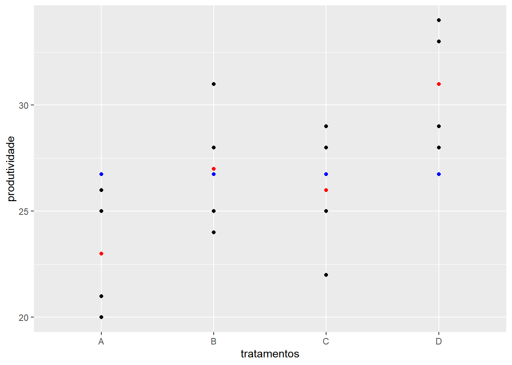

Capítulo 4 Delineamento inteiramente casualizado
4.1 Fundamentos
O delineamento inteiramente casualizado (DIC) é o mais simples dos delineamentos, pois considera apenas dois dos princípios básicos da experimentação: a repetição e a casualização. Neste, os tratamentos são aleatoriamente atribuídos ao material experimental, sem o esforço de se restringir os tratamentos a alguma porção de área, material ou espaço. Ainda como característica, como não há uso do controle local o número de repetições por tratamento pode variar.É geralmente utilizado quando a variação do material experimental é relativamente pequena, o que geralmente ocorre em laboratórios e casas de vegetação.
Como vantagens de sua utilização temos que é um experimento de fácil planejamento e que permite o número máximo de graus de liberdade do Resíduo. Em termos de análise é a mais simples quando comparado aos demais delineamentos experimentais e não apresentará confundimento caso os tratamentos tenham números diferentes de repetições. Entretanto, como desvantagens temos que o delineamento inteiramente casualizado é adequado aos experimentos com baixo número de tratamentos e material experimental homogêneo, o que nem sempre se consegue. Quando um grande número de tratamentos é utilizado, há um crescimento no material experimental, que pode inflacionar a variação experimental. Nesses casos o Delineamento Inteiramente Casualizado não é indicado.
4.2 Obtendo um croqui para um DIC
Para obtermos um croqui para um experimento com I tratamentos em um DIC, sendo o iésimo tratamento repetido ni vezes e o número total de parcelas \(n=\sum_{i=1}^I n_i\) (1)
- Enumerar as parcelas 1, 2, . . . , n
- Criar o delineamento sistemático, ou seja, alocar o tratamento 1 às parcelas 1, 2, . . . , n1 alocar o tratamento 2 às parcelas n1 + 1, n1 + 2, . . . , n1 + n2 e assim até as repetições do tratamento I.
- Escolha uma permutação de 1, 2, . . . , n e aplique ao delineamento.
4.2.1 Exemplo
Suponha que desejamos comparar a produtividade de três variedades de soja, com três, quatro e três repetições respectivamente. O plano de casualização para o delineamento sistemático é dado por:
| Ordem Padrão | 1 | 2 | 3 | 4 | 5 | 6 | 7 | 8 | 9 | 10 |
|---|---|---|---|---|---|---|---|---|---|---|
| Variedade | A | A | A | B | B | B | B | C | C | C |
Uma permutação:
| Parcelas | 7 | 1 | 8 | 10 | 3 | 2 | 4 | 6 | 9 | 5 |
|---|---|---|---|---|---|---|---|---|---|---|
| Ordem Padrão | 1 | 2 | 3 | 4 | 5 | 6 | 7 | 8 | 9 | 10 |
E o plano de casualização é dado por:
| Parcela | 1 | 2 | 3 | 4 | 5 | 6 | 7 | 8 | 9 | 10 |
|---|---|---|---|---|---|---|---|---|---|---|
| Variedade | B | A | C | C | A | A | B | B | C | A |
4.3 Análise dos dados
Entende-se como objetivo inicial de um experimento a verificação dos efeitos de tratamentos. Aqui será utilizada a Análise de Variância (ANOVA) para tal verificação. A ANOVA é utilizada na comparação de médias de dois ou mais tratamentos ou teste para a variância dos tratamentos, por meio do teste F (Fisher). Trata-se de uma extensão do teste t de Student, permitindo que o pesquisador compare qualquer número de médias, quando o efeito de tratamentos é fixo.
4.3.1 Modelo estatistico
O modelo estatístico para a análise dos dados oriundos de um DIC com um único fator de tratamentos é dado pela Equação 2.
\[y_{ij} = \mu + \tau_i + e_{ij} = \mu_i + e_{ij} (2)\]
em que:
\(y_{ij}\) é o valor observado na jésima repetição do iésimo tratamento, com:
- i = 1, … , I e
- j = 1, … , ni
\(\mu\) é uma constante inerente a todas as observações, geralmente a média geral,
\(\tau_i\) é o efeito do iésimo tratamento,
eij é o erro experimental, tal que \(e_{ij} \overset{iid}{\sim} N(0,\sigma^2)\).
Realizando-se a ANOVA, testamos as hipóteses:
\(H0 : \tau1 = \tau2 = ... = \tau I = 0\)
\(H1 = Ha\) : \(\tau i_6 = 0\) para algum i.
Havendo uma reparametrização do modelo apresentado na Equação 2, tal que \(\mu + \tau_i = \alpha i\) em que \(\alpha i\) é a média do iésimo tratamento, é:
\[yij = \alpha i + eij (3)\]
As hipóteses de interesse passam a ser:
\(H0 : \alpha1 = \alpha2 = ... = \alpha I = \mu\)
\(H1 = Ha\): pelo um contraste de médias difere de zero.
Neste momento assumiremos que as pressuposições de normalidade e independência dos erros, bem a homogeneidade de suas variâncias garantidas. Assim, assumimos que eij corresponde a uma realização da variável Eij , tal que \(e_{ij} \overset{iid}{\sim} N(0,\sigma^2)\) e os demais termos no modelo 1 são fixos. Cabe sailentar que o modelo citado é o modelo maximal, ou seja, aquele modelo mais complicado a ser considerado na análise. Desse modo, a esperança da variável aleatória Yij será
\[E(Yij ) = E(\mu + \tau_i + Eij ) = \mu + \tau_i + 0 = \mu + \tau_i (4)\]
4.3.2 Análise de variância
A proposta da ANOVA consiste em decompor a variância total dos dados em parte atribuída aos efeitos de tratamentos e parte ao acaso.
Tabela 1: Esquema da análise de variância considerando-se um delineamento inteiramente casualizado, com I tratamentos, sendo cada um repetido ni vezes e \(n = \sum_i ni\)
| Fontes de Variação | graus de liberdade |
|---|---|
| Total | \(n-1\) |
| Tratamentos | \(I-1\) |
| Resíduo | \(n-I\) |
Sabemos que a variância dos dados é dada por:
\[Variância = \sum _{ij} \frac{(yij−y)^2}{(n−1)}\]
\[variância = \displaystyle{\frac{SQ}{gl}}\]
Denotamos por Soma de Quadrados do Total (SQ Total) o numerador da expressão 3. Observe que a decomposição mencionada anteriormente será:
\[\displaystyle{\sum_{i=1}^I\sum_{j=1}^Jy_{ij}^2-\frac{\left(\sum_{i=1}^I\sum_{j=1}^Jy_{ij}\right)^2}{i\times j}}\]
em que SQ Tratamentos e SQ Resíduo correspondem às Soma de Quadrados de Tratamentos e Soma de Quadrados de Resíduo, respectivamente. As expressões apresentadas em 4 e 5, podem ser reescritas conforme segue.
\[\displaystyle{\frac{1}{5}\sum_{i=1}^I T_i^2 - \frac{\left(\sum_{i=1}^I\sum_{j=1}^Jy_{ij}\right)^2}{i\times j}}\] A SQ Resíduo (6) pode ser obtida por diferença, ou seja, SQ Resíduo = SQ Total - SQ Tratamentos.
Para encontrarmos a estatística apropriada para o teste F temos que obter as Esperanças dos Quadrados Médios relacionados a cada fonte de variação na ANOVA. Os quadrados médios, denotados usualmente por QM, são definidos pelo quociente entre a soma de quadrados e o respectivo número de graus de liberdade relacionados a uma fonte de varição, isto é:
\[QM_{Trat} = \displaystyle{\frac{SQ_\text{Trat}}{gl_\text{Trat}}}\] \[QM_{Resíduo} = \displaystyle{\frac{SQ_\text{Resíduo}}{gl_\text{Resíduo}}}\] \[F = \displaystyle{\frac{QM_{Trat}}{QM_{Resíduo}}}\] Retomando as hipóteses:
\(H0 : \mu1 = \mu2 = ... = \mu I = 0\)
\(H1 = Ha\): pelo um contraste de médias difere de zero.
Rejeita-se \(H_0\) se \(F_{cal} \geq F_{tab_{(\alpha, I-1, I(J-1))}}\), em que \(\alpha\) é o nível de significância, \(I-1\) é o número de graus de liberdade do numerador e \(I(J-1)\) é o número de graus de liberdade do denominador.
4.3.3 Coeficiente de variação
número de repetições pode estar associado ao número de graus de liberdade do resíduo ; \[gl_{Res} \geq 12\]
O CV é adimensional, pode-se comparar a dispersão de variáveis com diferentes unidades de medida.
\[\displaystyle{CV_{\%} = 100\frac{\hat{\sigma}}{\hat{\mu}} = 100\frac{\sqrt{QM_{Res}}}{\bar{y}}}\]
CV \(<\) 10% : baixo
10% \(<\) CV \(>\) 20% :médio
20% \(<\) CV \(>\) 30% :alto
CV \(>\) 30% : muito alto
4.4 Exemplo
Considere os dados abaixo referentes à produtividade de milho (kg/100m\(^2\)) de quatro diferentes variedades, em um experimento instalado segundo o delineamento inteiramente casualizado, com cinco repetições.
| (Variedades) | 1 | 2 | 3 | 4 | 5 | total | media |
|---|---|---|---|---|---|---|---|
| \(A\) | 25 | 26 | 20 | 23 | 21 | 115 | 23,00 |
| \(B\) | 31 | 25 | 28 | 27 | 24 | 135 | 27,00 |
| \(C\) | 22 | 26 | 28 | 25 | 29 | 130 | 26,00 |
| \(D\) | 33 | 29 | 31 | 34 | 28 | 155 | 31,00 |
| (Variedades) | 1 | 2 | 3 | 4 | 5 | total |
|---|---|---|---|---|---|---|
| V1 | y11 | y12 | y13 | y14 | y15 | y1· = T1 |
| V2 | y21 | y22 | y23 | y24 | y25 | y2· = T2 |
| V3 | y31 | y32 | y33 | y34 | y35 | y3· = T3 |
| V4 | y41 | y42 | y43 | y44 | y45 | y4· = T4 |
Análise descritiva:
| Análise | A | B | C | D |
|---|---|---|---|---|
| Soma | 115,00 | 135,00 | 130,00 | 155,00 |
| Média | 23,00 | 27,00 | 26,00 | 31,00 |
| Variância | 6,50 | 7,50 | 7,50 | 6,50 |
| Desvio-padrão | 2,55 | 2,74 | 2,74 | 2,55 |
Soma de Quadrados total \[SQ_{Total} = \displaystyle{\sum_{i=1}^4\sum_{j=1}^5y_{ij}^2 - \frac{\left(\sum_{i=1}^4\sum_{j=1}^5y_{ij}\right)^2}{4\times5}}\] \[ = \displaystyle{25^2 + 26^2 + \ldots + 28^2 - \frac{535^2}{20}} = 275,75\]
Soma de Quadrados de tratamentos
\[SQ_{Trat} = \displaystyle{\frac{1}{5}\sum_{i=1}^4 T_i^2 - \frac{\left(\sum_{i=1}^4\sum_{j=1}^5y_{ij}\right)^2}{4\times5}}\] \[= \displaystyle{\frac{1}{5}\left(115^2 + 135^2 + 130^2 + 155^2\right) - \frac{535^2}{20}}= 163,75\]
Soma de Quadrados do Resíduo
\[SQ_{Resíduo} = SQ_{Total} - SQ_{Trat}\] \[= 275,75 - 163,75 = 112,00\]
Quadrado médio tratamentos
\[QM_{Trat} = \displaystyle{\frac{SQ_{Trat}}{gl_{Trat}}} = \displaystyle{\frac{163,75}{3}} = 54,5833\]
Quadrado médio do resíduo
\[QM_{Resíduo} = \displaystyle{\frac{SQ_{Resíduo}}{gl_{Resíduo}}}=\displaystyle{\frac{112,00}{16}}= 7,0000\]
F calculado
\[F = \displaystyle{\frac{QM_{Trat}}{QM_{Resíduo}}}=\displaystyle{\frac{54,5833}{7,0000}}= 7,80\]
Tabela da ANOVA:
| Fontes | Graus de liberdade | Soma de Quadrados | Quadrado Médio | Fcal | Ftab |
|---|---|---|---|---|---|
| Tratamentos | 3 | 163,75 | 54,5833 | 7,80 | |
| resıduo | 16 | 112,00 | 7,0000 | ||
| Total | 19 | 275,75 |
F tabelado:
> # Defina o nível de significância desejado (por exemplo, 0.05 para um nível de 5%)
> nivel_de_significancia <- 0.05
>
> # Defina os graus de liberdade do numerador (df1) e do denominador (df2)
> df1 <- 3 # Graus de liberdade do numerador
> df2 <- 16 # Graus de liberdade do denominador
>
> # Encontre o valor crítico da distribuição F para o nível de significância especificado
> valor_critico <- qf(1 - nivel_de_significancia, df1, df2)
>
> # Imprima o valor crítico
> cat("Valor crítico da distribuição F:", valor_critico, "\n")Valor crítico da distribuição F: 3.238872 Como \(F = 7. 80 > 3. 24\) = FTab (\(\alpha = 0. 05\), 3, 16), há evidências para rejeitarmos \(H_0\) ao nível de 5% de significância. Desse modo, não podemos afirmar que todas as médias são iguais.
4.5 Aplicação no R studio
4.5.1 Planejamento e Croqui
> #' # Planejamento de um experimento
> set.seed(1234)
> sample(rep(c("A", "B", "C", "D"), 5)) [1] "D" "A" "D" "C" "A" "C" "B" "D" "B" "C" "B" "B" "C" "D" "A" "D" "A" "A" "B"
[20] "C"> #' ## Usando a biblioteca agricolae
>
> # Instalando
> # install.packages("agricolae",
> # dependencies = TRUE)
> # Habilitando as funções
> library(agricolae)
> trt = LETTERS[1:4]
> delineamento <- design.crd(trt,
+ r = 5,
+ serie = 0)
> delineamento$parameters
$parameters$design
[1] "crd"
$parameters$trt
[1] "A" "B" "C" "D"
$parameters$r
[1] 5 5 5 5
$parameters$serie
[1] 0
$parameters$seed
[1] 1407173775
$parameters$kinds
[1] "Super-Duper"
$parameters[[7]]
[1] TRUE
$book
plots r trt
1 1 1 C
2 2 1 B
3 3 1 D
4 4 2 D
5 5 2 B
6 6 2 C
7 7 3 B
8 8 3 D
9 9 4 B
10 10 4 D
11 11 5 B
12 12 1 A
13 13 2 A
14 14 3 C
15 15 3 A
16 16 4 A
17 17 5 D
18 18 4 C
19 19 5 A
20 20 5 C> # Graficamente
>
> # install.packages("agricolaeplotr",
> # dependencies = TRUE)
> library(agricolaeplotr)The legacy packages maptools, rgdal, and rgeos, underpinning the sp package,
which was just loaded, will retire in October 2023.
Please refer to R-spatial evolution reports for details, especially
https://r-spatial.org/r/2023/05/15/evolution4.html.
It may be desirable to make the sf package available;
package maintainers should consider adding sf to Suggests:.
The sp package is now running under evolution status 2
(status 2 uses the sf package in place of rgdal)
Attaching package: 'agricolaeplotr'The following object is masked from 'package:base':
summary> plot_design_crd(delineamento,
+ ncols = 4,
+ nrows = 5)> # Para montar um croqui precisamos de um gride, definido por linhas e colunas
> delineamento$book$Linha <- rep(1:5, each = 4)
> delineamento$book$Coluna <- rep(1:4, times = 5)
>
> delineamento$book plots r trt Linha Coluna
1 1 1 C 1 1
2 2 1 B 1 2
3 3 1 D 1 3
4 4 2 D 1 4
5 5 2 B 2 1
6 6 2 C 2 2
7 7 3 B 2 3
8 8 3 D 2 4
9 9 4 B 3 1
10 10 4 D 3 2
11 11 5 B 3 3
12 12 1 A 3 4
13 13 2 A 4 1
14 14 3 C 4 2
15 15 3 A 4 3
16 16 4 A 4 4
17 17 5 D 5 1
18 18 4 C 5 2
19 19 5 A 5 3
20 20 5 C 5 44.5.2 Importando dados de excel .xlsx
> #Deve-se importar os arquivos .xlsx para o Rstudio
> library(readxl)
> dados1 <- read_xlsx("dados/aula2.2.xlsx")
>
> knitr::kable(dados1)| trat | y |
|---|---|
| A | 25 |
| A | 26 |
| A | 20 |
| A | 23 |
| A | 21 |
| B | 31 |
| B | 25 |
| B | 28 |
| B | 27 |
| B | 24 |
| C | 22 |
| C | 26 |
| C | 28 |
| C | 25 |
| C | 29 |
| D | 33 |
| D | 29 |
| D | 31 |
| D | 34 |
| D | 28 |
4.5.3 Análise descritiva dos dados
> library(ggplot2)
> ggplot(dados1,
+ aes(x = trat,
+ y = y)) +
+ geom_point() +
+ geom_point(stat = "summary",
+ fun = mean,
+ col = "red") +
+ annotate("point",
+ x = dados1$trat,
+ y = 26.75,
+ colour = "blue") +
+ xlab("tratamentos") +
+ ylab("produtividade")
> ggplot(dados1,
+ aes(x = trat,
+ y = y)) +
+ geom_boxplot()
> #' ## Estatísticas descritivas
> n <- with(dados1, tapply(y,trat, length))
> soma <- with(dados1, tapply(y,trat,sum))
> media <- with(dados1, tapply(y,trat,mean))
> variancia <- with(dados1, tapply(y,trat,var))
> desv.padr <- with(dados1, tapply(y,trat,sd))
> dist.int <- with(dados1, tapply(y,trat,IQR))> #' Criando uma função que calcula a amplitude
> f1 <- function(x) max(x)-min(x)
> amplitude <- with(dados1, tapply(y,trat,f1))
>
> resumo <- rbind(n, soma, media, variancia,
+ desv.padr, amplitude,dist.int)
> rownames(resumo) <- c("n", "Soma", "Média",
+ "Variância", "Desvio-padrão",
+ "Amplitude", "Amplitude Interquartílica")
> round(resumo,3) A B C D
n 5.00 5.000 5.000 5.00
Soma 115.00 135.000 130.000 155.00
Média 23.00 27.000 26.000 31.00
Variância 6.50 7.500 7.500 6.50
Desvio-padrão 2.55 2.739 2.739 2.55
Amplitude 6.00 7.000 7.000 6.00
Amplitude Interquartílica 4.00 3.000 3.000 4.004.5.4 Análise da variância (ANOVA)
> #' ## Análise de variância
> #'
> #' $H_0$: $\mu_1 = \mu_2 = \mu_3 = \mu_4$ *versus*
> #' $H_1:$ Pelo menos duas médias de tratamentos diferem entre si.
> #'
> modelo <- aov(y ~ trat, dados1)
> anova(modelo)Analysis of Variance Table
Response: y
Df Sum Sq Mean Sq F value Pr(>F)
trat 3 163.75 54.583 7.7976 0.001976 **
Residuals 16 112.00 7.000
---
Signif. codes: 0 '***' 0.001 '**' 0.01 '*' 0.05 '.' 0.1 ' ' 14.6 Exercicíos
- Os dados apresentados na Tabela 1 são referentes ao peso de espigas de milho, em kg/10m², em cada parcela (10 m²). São apresentados os dados de 5 genótipos avaliados em um delineamento inteiramente casualizado (DIC) com 4 repetições.
| Genótipos | I | II | III | IV |
|---|---|---|---|---|
| A | 5,95 | 6,21 | 5,40 | 5,18 |
| B | 5,07 | 6,71 | 5,46 | 4,98 |
| C | 4,82 | 5,11 | 4,68 | 4,52 |
| D | 3,87 | 4,16 | 4,11 | 4,84 |
| E | 5,53 | 5,82 | 4,29 | 4,70 |
Considere os dados apresentados na Tabela.
Faça um possível croqui de instalação para um novo experimento com o mesmo número de tratamentos (genótipos) e de repetições;
Faça a análise exploratória dos dados de peso de espigas;
Faça a análise de variância e interprete o resultado do teste F considerando o nível de significância 5%;
- Em um experimento de competição de dez cultivares de arroz para avaliar a produtividade, instalado em um delineamento inteiramente casualizado, os resultados (parciais) para a ANOVA foram os seguintes:
| Fonte | GL | SQ | QM | F Cal | F Tab |
|---|---|---|---|---|---|
| cultivar | x | 17564523 | x | 9.31 | 2.39 |
| Resíduo | x | x | x | x | x |
| Total | 29 | x | x | x | x |
Complete o quadro da ANOVA
Com base no resultado da ANOVA escreva as hipóteses e a conclusão
- Em um experimento realizado no detapartamento de zootecnia da Esalq foram encontras as seguintes concentrações de glicose no sangue ( mg/ 100ml ) de 5 raças de bovinos sendo 8 amostras por raça. Os resultados foram:
| Raças | 1 | 2 | 3 | 4 | 5 | 6 | 7 | 8 |
|---|---|---|---|---|---|---|---|---|
| Nelore | 124 | 111 | 117 | 110 | 142 | 116 | 121 | 142 |
| Gir | 101 | 98 | 121 | 117 | 106 | 118 | 108 | 123 |
| Girolando | 118 | 127 | 121 | 121 | 127 | 120 | 129 | 138 |
| Holandês | 125 | 129 | 148 | 119 | 139 | 110 | 122 | 141 |
| Senepol | 101 | 103 | 112 | 107 | 119 | 106 | 122 | 118 |
Faça uma análise descritiva dos dados.
Faça o quadro da ANOVA e responda qual hipótese seguir.
Como seria um possível planejamento para esse experimento?